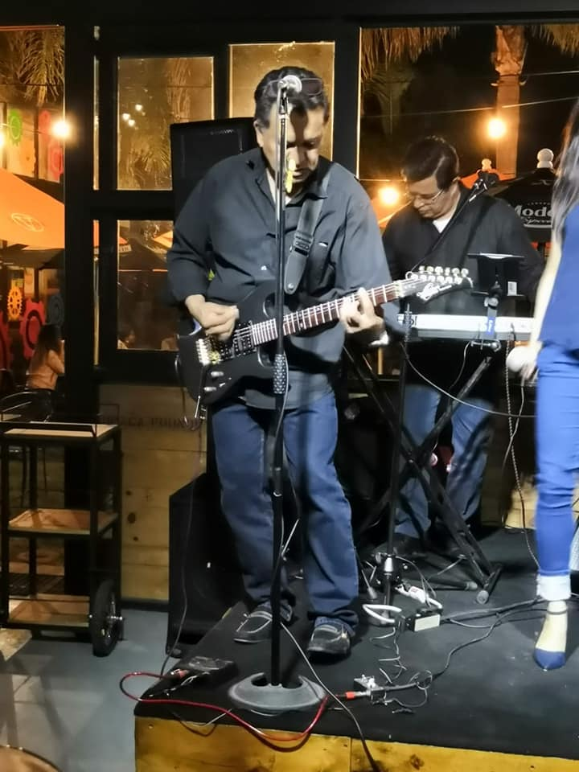
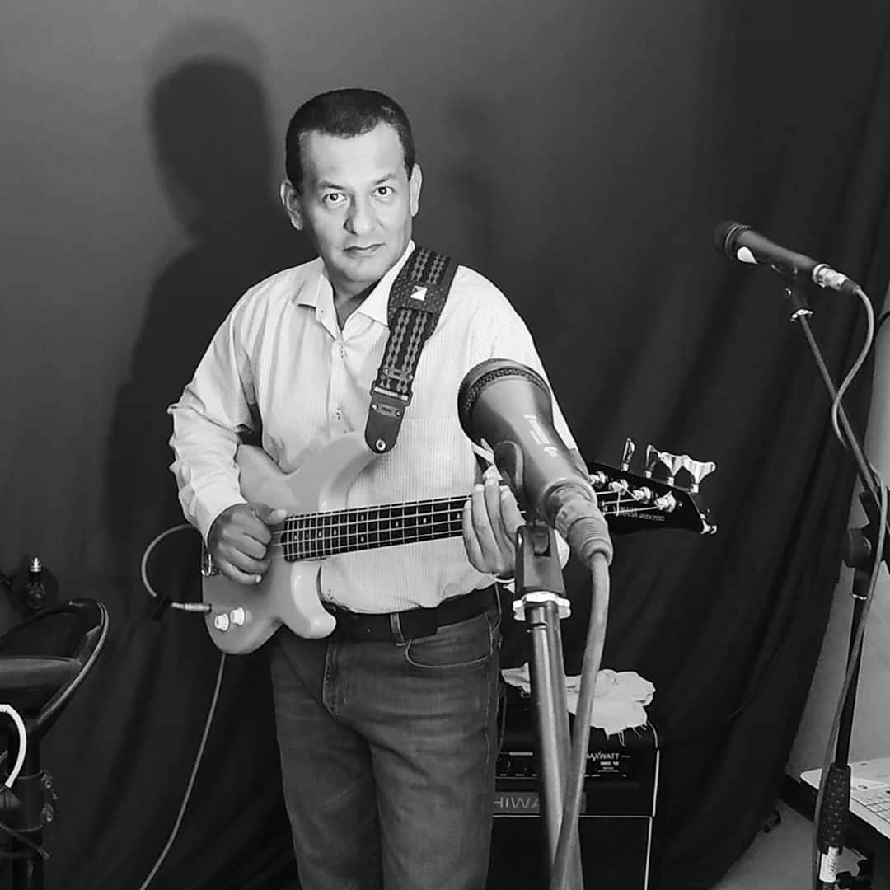
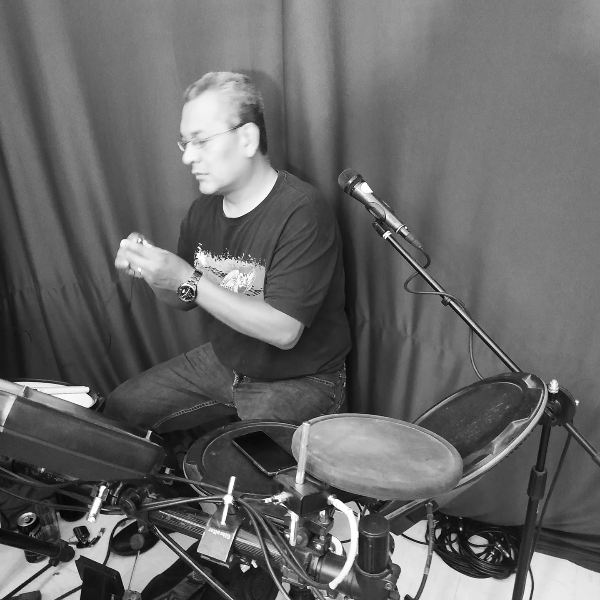
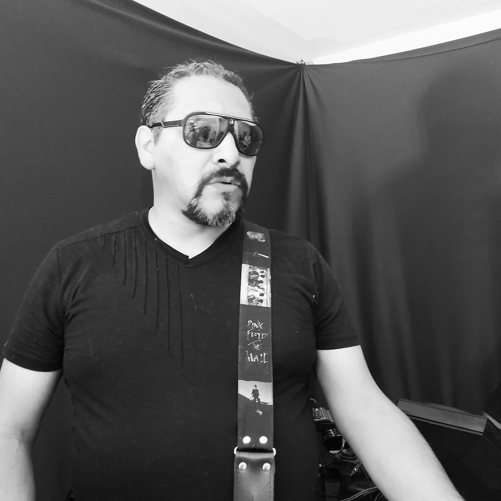

Jorge Torres
Guitarra/Coros
Jorge Torres originario de la ciudad de México empezó su gusto musical a los 15 años por la batería formado un grupo con sus primos, el grupo Ciudad de Humo, a finales de los 70' para después alternar con varios amigos músicos sin concretar nada hasta que con sus hermanos, Arturo y Fabián, deciden forman su propia banda interpretando los éxitos del nuevo Rock en tu idioma teniendo cierta popularidad en la zona sur del DF. Tomando el gusto por la guitarra y un poco de teclados Por poco más de una década incursionó con sus hermanos en género versátil teniendo bastante aceptación y trabajo como Grupo Musical Los Torres, conociendo y dominando la actividad de ambientador y músico. Por cuestiones laborales y de cambio de residencia el grupo dejo de tocar retomando su actividad musical en 2017 con Vintage.

Fabian Torres
Bajo
Nacido a comienzos de los años 70, adquiero el gusto por la música por influencia de Jorge Torres, inclinandome por el bajo eléctrico, para los años 80's en pleno boom del rock en tu idioma formaba parte del grupo Etcétera y Voz Tauruz con mis hermanos, con influencias muy marcadas para ejecutar mi instrumento en Bajistas como Mark King (level42), Geddy Lee (Rush), incursionando también en Música versátil durante varios años con logros importantes en el ramo. Actualmente me incorporé a Vintage para disfrutar de la Música que marcó mi trayectoria musical hasta estos días.

Arturo Torres
Batería
Nacido a comienzos de los años 70, adquiero el gusto por la música por influencia de Jorge Torres, iniciando aproximadamente en los ochentas con una batería de cocina, desde joven me llamo mucho la atención la batería y posteriormente el gran privilegio de las percusiones, me forme como baterista creo en la mejor época cuando surge en México Rock en tu idioma , que es mi influencia musical más relevante.
Posterior al cambio de batería acústica ( Tama Rock Star ) un cambio a Eléctrica ( Alesis D4 ) me ha dado muchas satisfacciones y posibilidades con mis módulos.
Con muchos años de experiencia en música versátil hoy este proyecto es disfrutar junto con la banda el gusto por la música y eso reflejarlo en el escenario en cada concierto.

Daniel Montero
Vocalista
Nacido en 1976 en una familia con gusto por las artes gráficas y escénicas tome el gusto por cantar a la edad de 10 años siendo hasta los 18 cuando forme parte de varios grupos en la ciudad de Mexicali, pero hasta finales de los 90s fue cuando afiance mi canto siendo mis inicio en la música vernácula y Balada Romántica pero siempre teniendo presente la música con la que crecí que es el Rock tanto en inglés como en español
A finales del año 2016 conocí a Jorge Torres con el que compartí el gusto por la música y después de dos participaciones en algunos proyectos decidimos crear al grupo Vintage en el que actualmente soy la primera vos y acompañamiento tanto con la guitarra como con algunas percusiones